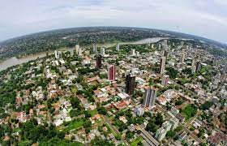
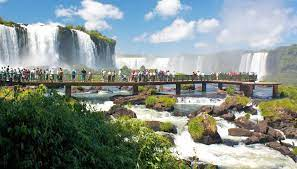

Foz do Iguaçu
Foz do Iguaçu, cidade no estado brasileiro do Paraná, é a principal base para visitar as famosas Cataratas do Iguaçu, uma das maiores cachoeiras do mundo. Com uma extensão de 2,7 km e atravessando a fronteira com a Argentina, as cataratas são formadas por centenas de cascatas,
entre elas a Garganta do Diabo, com 80 m de altura. Passeios em barcos infláveis durante os quais os turistas ficam encharcados são uma forma muito comum de apreciar esse espetáculo natural.

Cataratas
Cataratas do Iguaçu (em castelhano: Cataratas del Iguazú) é um conjunto de cerca de 275 quedas de água no rio Iguaçu (na Bacia hidrográfica do rio Paraná), localizada entre o Parque Nacional do Iguaçu,
Paraná, no Brasil, e o Parque Nacional Iguazú em Misiones, na Argentina, na fronteira entre os dois países
